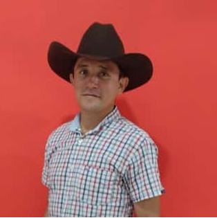

CV de William E. Estrada
ADSI - TÉCNICO EN SISTEMAS
Técnico en Sistemas con más de 5 años de experiencia en mantenimiento de equipos de computo e instalación de redes
Tecnólogo en Análisis y Desarrollo de Sistemas de Información, iniciando mi carrera como desarrollador.
Educación
- Técnico en Sistemas
- 2013-2015. Servicio Nacional de Aprendizaje SENA
- Tecnólogo en Análisis y Desarrollo de Sistemas de Información
- 2016 - 2019. Servicio Nacional de Aprendizaje SENA

Experiencia Laboral
- Técnico en Sistemas
- 2015 - 2021. Mantenimiento de software y hardware de equipos de computo
- Instalación de redes LAN
- Desarrollo proyecto productivo
- 2021. Crear solución tecnológica para actualizar las tarifas automáticamente según las temporadas de un hotel
Otros Estudios
- Técnico en Sistemas
- 2015 - 2021. Mantenimiento de software y hardware de equipos de computo
- Instalación de redes LAN
- Desarrollo proyecto productivo
- 2021. Crear solución tecnológica para actualizar las tarifas automáticamente según las temporadas de un hotel
Certificados
- Certificado 1
- Certificado 2
- Certificado 3